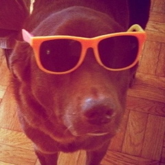
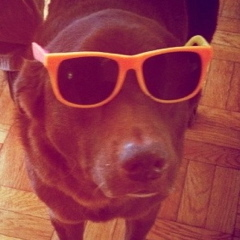

Her majesty Madame Nic Bravo is a queer non-binary trans* lady and the queen of Gaynesville, FL. You should say “she”.
Nic writes about her trans experience in stick up for yourself, son and engages with the queer tumblr community at Nic Bravo Reblogs. She tweets dark secrets about her friends in @nicbravo. She likes timeless elegance, explicit communication, consent, and cuddling, and hopes you do too.
She's the best person in the world.